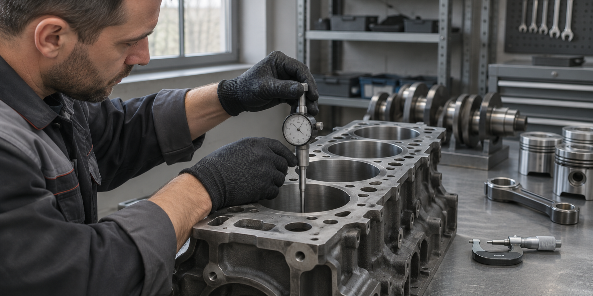

Ремонт починається з розуміння стану двигуна.
Обсяг робіт визначають за моделлю, модифікацією та результатами дефектації.
Підготувати зверненняЩо може входити до ремонту
Залежно від завдання роботи можуть включати розбирання, очищення та миття, вимірювання деталей, відновлення придатних або заміну непридатних компонентів і подальше складання.
Для окремих двигунів передбачаються стендові випробування. Частину випробувань проводять профільні підрядники. Можливість відеофіксації та оформлення протоколу уточнюється для конкретного замовлення.
Умови обговорюються окремо
Вартість залежить від типу двигуна, його стану та потрібних запчастин. Строки й склад ремонту визначають після дефектації. Умови діагностики та гарантії узгоджуються за конкретним замовленням.
У практиці підприємства трапляються питання до паливної апаратури та зношення гільз, кілець і вкладишів. Причину несправності встановлюють після оцінювання двигуна.

Підготуйте інформацію для розмови.
Повне маркування, назва техніки, опис несправності, доступні фото й історія попередніх ремонтів допоможуть розпочати обговорення.
Підготувати запитДіагностика, терміни та гарантія
Якщо очевидну причину пошкодження можна визначити візуально, огляд може бути безкоштовним. Складніша діагностика платна; умови залежать від завдання. Після дефектації узгоджують обсяг, ціну й строк ремонту.
Гарантія визначається договором і характеристиками виробу, зокрема напрацюванням у мотогодинах. Для деяких типів двигунів стендові випробування проводять підрядники; їхні результати фіксують у протоколі та на відео.
Переглянути етапи роботи ↗